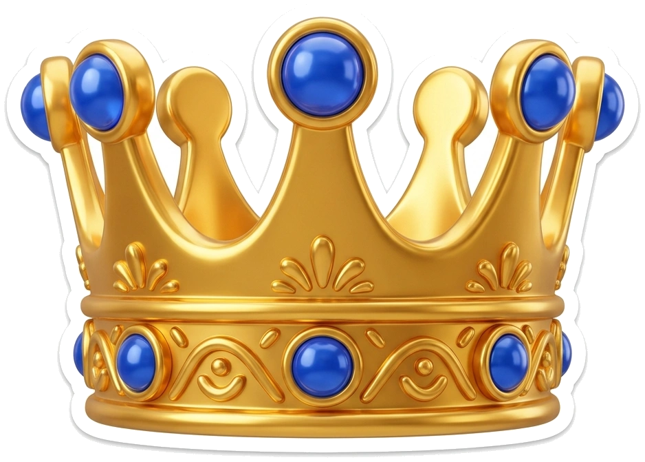
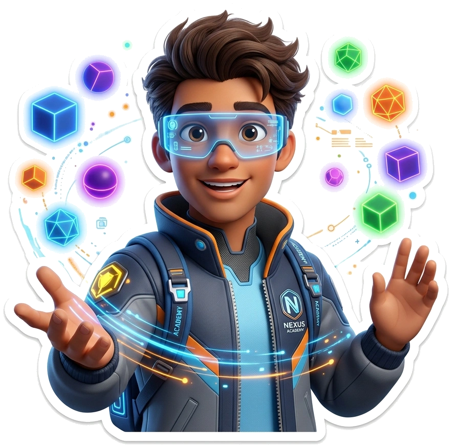

30

Misi Demokrasi
Selesaikan level dan raih badge prestasi!
Game Populer
Lihat Semua
PANCASILA
Democracy Quest
Jelajahi dunia demokrasi melalui kuis seru tentang HAM, hukum, otonomi daerah, kemakmuran, dan keadilan sosial. Selesaikan setiap tantangan, kumpulkan badge, dan jadilah juara demokrasi!

Menuju Peta Level...